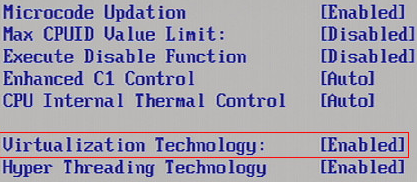
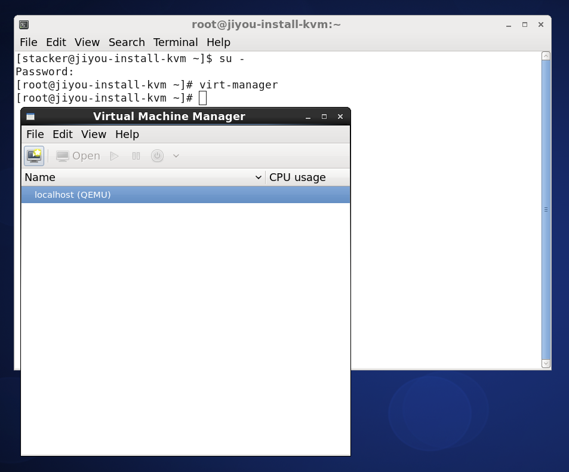

作者: Ji You Email: jumail@qq.com
第一章 由零开始
很高兴能够从这里开始，无论之前是否接触过OpenStack，或者Linux，哪怕只是听说过云计算。在这里，心里默念几遍“欲速则不达”，非常必要。让心开始静下来，准备开始。
如果读者只是准备利用Windows上的虚拟机搭建OpenStack，可以直接阅读第三章《VirtualBox及其使用》。本章所介绍的知识为利用Linux环境创建虚拟机。
再次重申：
- 本章节进行的操作都是为了在真实的Linux物理机环境上操作虚拟机，请不要在Windows上搭建虚拟机仿真本章实验及操作。
- 如果有支持VT的物理机可供安装Linux系统，建议从本章开始阅读。
- 如果读者使用的是Windows环境，请从第三章开始。
1.1 开启VT
由于本章所使用的环境都是在真实的物理机上操作，首先要检测的是物理机是否支持VT。
虚拟化技术（Virtualization Techonology, VT），不同的厂商对于虚拟化技术称呼不同，Intel命令为Intel-VT，而AMD称之为AMD-V。本书中统称为VT。
检测是否支持VT，最简单也是最直接的方法，即是启动系统时，进入BIOS，打开CPU选项卡，确保VT处于Enabled状态。如果处于Disabled状态，请务必更改为Enabled状态。正确状态如下图所示：

图1.1 BIOS中开启VT
如果没有在BIOS中找到此选项，或者不知道如何开启，请参考以下建议，如果已成功开启，请跳过此建议。
不同的BIOS对于VT的显示并不相同，有的显示为VT，有的显示为Virtualization，应该注意辨识。
如果在BIOS中，没有发现Virtualization字样，应该查询相应CPU型号，以确认使用的CPU是否支持虚拟化。如果BIOS中虚拟化并没有开启，安装KVM之后，KVM模块仍然不能使用。因此，应该必须保证VT被开启。
如果在BIOS中没有找到VT信息，一种检测CPU是否支持VT的方法是通过命令检测，如果没有任何输出，则表明不支持VT。如果有输出，则表明CPU支持VT，应至BIOS中查找VT选项，并确保开启。
egrep -o "(vmx|svm)" /proc/cpuinfo
- 除了此项需要设置之外，如果发现VT-d Tech选项，也应该将此项开启。VT-d技术表示CPU支持直接I/O访问的虚拟化技术。此项属于加分项，如果没有找到，也并不影响。
1.2 安装CentOS
关于CentOS的安装，被移动至了《附录 安装CentOS 6.5 Linux操作系统》。请参考此步骤进行CentOS 6.5的安装。
特别提醒
- 物理机的安装，在服务器类型一处，本章请选择Desktop。如图1.2所示。
- 如果对于CentOS Linux不是非常熟悉，请务必严格参考附录安装步骤。

图1.2 服务器类型选择Desktop
本书所有的实验都将基于Desktop类型。为了后续章节实验的顺利进行，请务必选择此选项且不要做额外配置。
- 安装好CentOS 6.5系统之后，为了后续步骤能够正常进行，不要配置其他源或者执行
yum update。
1.3 配置离线源
为了实验正常进行，以及更好的解决依赖问题，已经提供了会用到的所有的离线源。为了使本书所有的实验能够正常运行，请按以下步骤设置离线源。
Step 1 下载源
本书会用到的所有的离线源，均放置于百度云 （http://pan.baidu.com/s/1gdzixz1） 中。首先下载此离线 源booksrepo.tar.gz，并且放置于/opt/目录。
- 为了实验正常进行，请务必按照书中目录进行存放。
Step 2 解压
首先切换至root用户：
# whoami
stacker # 如果显示为root，而不用再执行`su -`
# su -
Password: # 输入root用户密码。
利用root用户，运行如下命令：
# cd /opt
# tar zxf booksrepo.tar.gz
# ls
booksrepo booksrepo.tar.gz #此处为命令的输出结果。
Step 3 建立源
建立离线源，首先需要移除旧有的源：
# cd /etc/yum.repos.d
# mkdir -p /root/saved.repo
# mv *.repo /root/saved.repo
新建文件booksrepo.repo：
# cd /etc/yum.repos.d
# vim booksrepo.repo
[booksrepo]
name=booksrepo
baseurl=file:///opt/booksrepo/
gpgcheck=0
enabled=1
proxy=_none_
- 对vim不熟悉的读者，当进入vim之后，按一下i就可以正常编辑啦。
- 注意每一行的开头没有空格或者Tab。如果有，请删除多余的空格或者Tab。
Step 4 更新源
接下来可以使用离线源：
# yum clean all && yum makecache
Loaded plugins: fastestmirror, refresh-packagekit, security
Cleaning repos: booksrepo total
Cleaning up Everything
Cleaning up list of fastest mirrors
Loaded plugins: fastestmirror, refresh-packagekit, security
Determining fastest mirrors
booksrepo | 2.9 kB 00:00 ...
booksrepo/filelists_db | 33 kB 00:00 ...
booksrepo/primary_db | 55 kB 00:00 ...
booksrepo/other_db | 38 kB 00:00 ...
Metadata Cache Created
具体输出可能会有所不同，但是只要看到有Metadata Cache Created则表明离线源创建成功。
1.4 安装KVM
KVM是整个OpenStack开源云的基石之一，可能说是最重要的一块。能熟练地使用KVM，云计算也就会了一半了。KVM主要的功能是能够在一个Linux操作系统上运行多个虚拟机。
- Windows上无法安装KVM。KVM相当于Linux界的vmware。当然，它是开源且免费的。
Step 1 检测yum
首先应该检测yum是否被正确配置。如果没有配置离线源，请返回上一节配置离线源。
# yum makecache && yum search kvm
Loaded plugins: fastestmirror, refresh-packagekit, security
Loading mirror speeds from cached hostfile
booksrepo | 2.9 kB 00:00 ...
Metadata Cache Created
Loaded plugins: fastestmirror, refresh-packagekit, security
Loading mirror speeds from cached hostfile
=============================================== N/S Matched: kvm ===============================================
qemu-kvm.x86_64 : Userspace component of KVM
xnba-kvm.x86_64 : xNBA loader for virtual guests
Name and summary matches only, use "search all" for everything.
配置正确将会看到相应输出，具体环境不同，可能输出不同。只要能找到qemu-kvm即是成功。
Step 2 安装KVM，Libvirt，virt-manager
# yum install -y kvm libvirt virt-manager
......
Complete!
如果出现Complete!则表明安装成功。
Step 3 启动Libvirtd
# service libvirtd start
Starting libvirtd daemon: [ OK ]
如果出现[OK]则表明启动成功。
1.5 virt-manager
对于刚接触KVM的读者而言，建立虚拟机的使用virt-manager是最好的选择。请参考以下步骤使用virt-manager。
Step 1 开启桌面终端
在CentOS 6.5桌面环境中，新开一个终端，如图1.3所示：

图1.3 在桌面环境新开终端
- virt-mananger是带UI的程序，需要在运行在桌面环境中。利用ssh无法正常启动virt-manager。
Step 2 切换至root用户
然后输入如下命令：
# su -
Password: # 输入root用户密码。
Step 3 启动virt-manager
# virt-manager

图1.4 启动virt-manager
如果能够成功出现图1.4所示界面，表明virt-manager能够成功启动了。接下来就可以尝试创建一个新的虚拟机了。
1.6 创建虚拟机
详细地创建虚拟机的步骤，可以参考《附录 virt-manager创建虚拟机》。
1.7 小结
至此，第一章结束。在本章中简单地介绍了本书会用到的环境，以及如何利用virt-manager创建一个新的虚拟机。已经有了一个很好的起点。
那么，在云计算中，是如何做到快速地创建一个虚拟机呢？不需要手动操作呢？又是如何安装操作系统的呢？那么请看下一章。